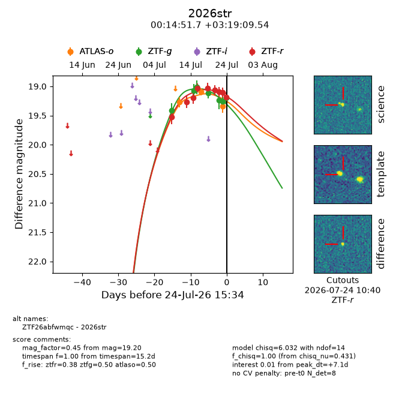
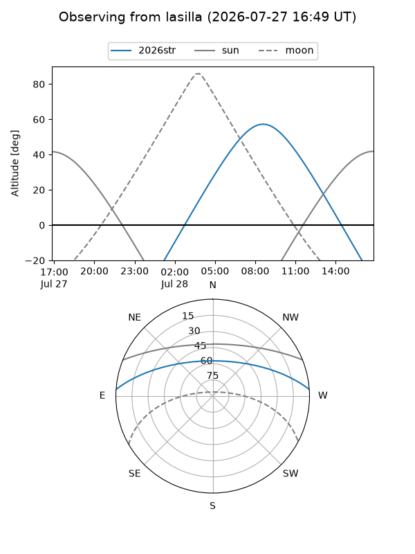
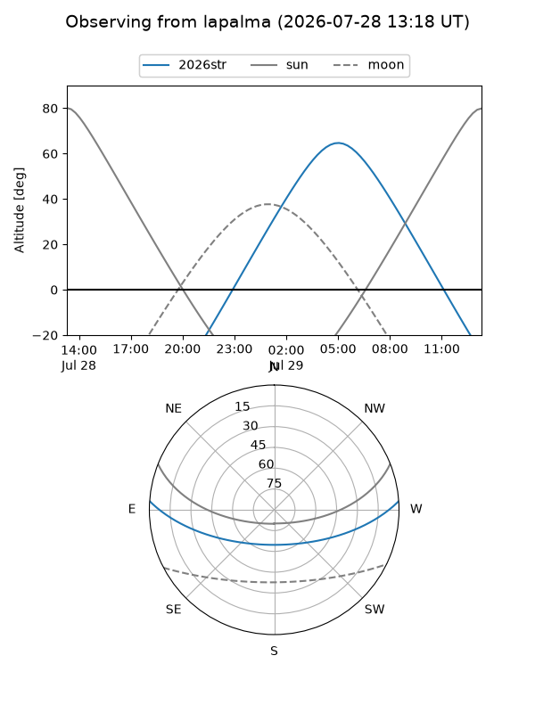
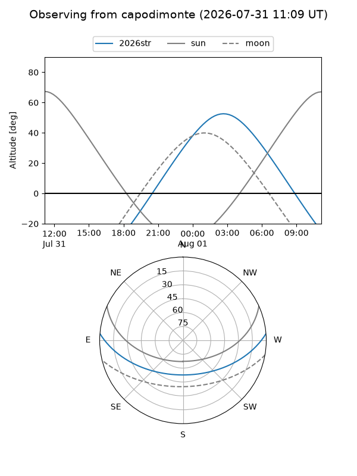
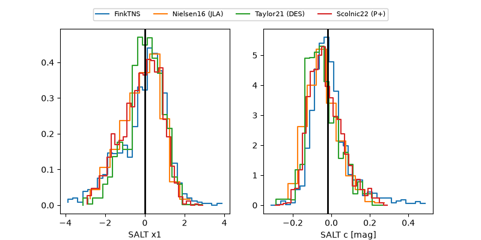

2026str
Target 2026str at 2026-07-24 15:36
Aliases and brokers:
FINK-ZTF: ztf.fink-portal.org/ZTF26abfwmqc
Lasair-ZTF: lasair-ztf.lsst.ac.uk/objects/ZTF26abfwmqc
ALeRCE-ZTF: alerce.online/object/ZTF26abfwmqc
YSE-PZ: ziggy.ucolick.org/yse/transient_detail/2026str
TNS name: wis-tns.org/object/2026str
Direct TNS query: direct search
alt names
ZTF26abfwmqc (ztf,fink_ztf)
2026str (tns,yse)
Coordinates:
equatorial (ra, dec) = 3.7154,+3.31932
equatorial (HMS+DMS) = 00:14:51.70,+03:19:09.54
galactic (l, b) = (105.3594,-58.29903)
Flags:
TNS type: nan
peak dt: +7.1
Photometry:
last atlaso=19.34, ztfg=19.20, ztfr=19.19
3 atlaso, 7 ztfg, 9 ztfr detections
Lightcurve

Visibility



Additional plots
